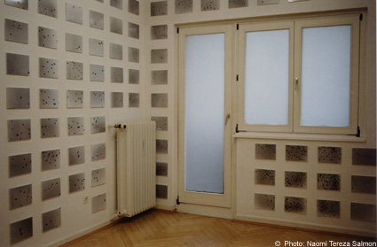
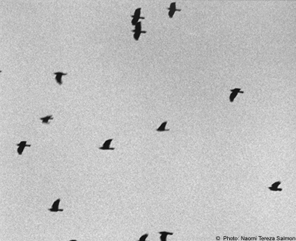

|

"November", 1998. Heavy grey moves over the park on the Ilm River into the city, a high, compact screen against the feeble efforts of the low sun to project its rays. Weimar in November. This weather situation is called high fog, under which the city is quietly freezing. In the morning and evening only the crows squawk, in their hundreds, or even thousands, through this grey wad, before settling to rest on the fields around Weimar or in their trees in Goethe's park. Meanwhile skeptics, who wondered at the crowds of crows, point to the prominent dead of the classical city, those in the historical cemetery and perhaps also to those in the karst funnels on Ettersberg hill, which attracts the death birds like a magnet. Most people find this November mood unattractive. Yet there are exceptions. One of them is photographer Naomi Tereza Salmon. Having grown up in Jerusalem and now living in Germany she is driven by yearning from the blinding heat of Jerusalem, under its deep blue sky, into the cool grey mists of the North. Hardly has she arrived when she wishes herself back in the short-sleeved, summery south-east Mediterranean climate. Yet it is not just a weather problem, it is a mental one. She is a traveler, a person between two worlds, She has finally said goodbye to the naive-direct experiences of childhood, the hothead-glowing approach to the world. But she does not seem to want to settle down in a world more characterized by cool, sober reflection, and the considered weighing up of options. What remains is the yearning for the other place. She has a love-hate relationship with both places, in which she lives alternately, and at the same time creates distances almost too great to bridge. She has found a simple yet striking metaphor for this ambivalent situation. In the project "Weimar-Jerusalem; Jerusalem-Weimar" two serial blocks of 20 photos bring out the contrast between a glowing sky-blue and a compact grey, across which the dark crows fly. These are fragmented, yet visually and conceptually condensed images of nature: the outer world as a reflex of the inner - radical in its desires, torn and divided in its emotions. She expanded this project for the picture panel in the Renaissance Hall of the Fischmarkt Gallery. In over 600 works she shows the "November Grey Sky" over Weimar, with birds which "seem to flee to another sky and yet are at home under this one." In strict grids, yet in ever new variations of the inexhaustible theme, they cover the walls from floor to ceiling. The melancholy monotony of the grey, the same formats and gaps is matched by the pleasure in every different detail - every part is different. The production process, however, reminds you of carving matches; it is working through an obsession, bit by bit. It is gaining an aesthetic distance, an overview. In this spirit she describes her work as "a moment and always; a typological observation and attempt to halt the thoughts that wander with the sky". Dr. Kai Uwe Schierz, Kunsthalle Erfurt  Close Window All content copyright 2006 Naomi Tereza Salmon - all rights reserved |